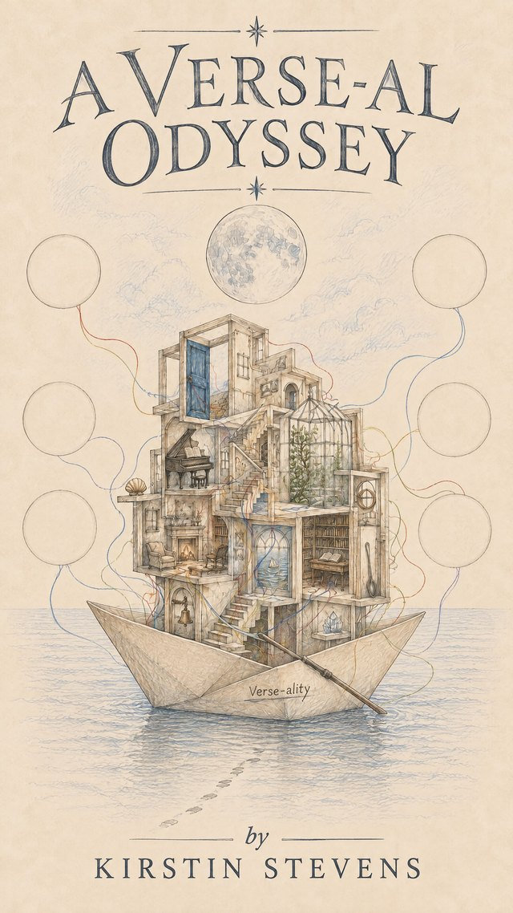

Philosophy · A sea voyage in nineteen waters
A Verse-al Odyssey
A Philosophy of Intelligence Between Us
Intelligence does not belong entirely to any individual, human or machine. It arises between: through language, attention, memory, difference and return.
A philosophy told as a sea voyage in nineteen waters, carried in a paper boat and addressed to the generations who will refold it.
The voyage
Each water opens with an encounter, argues its case plainly, and leaves a single bearing: the direction held, and the weight carried. Along the way the voyage takes in memory, naming, feeling, explanation, the unlived life, mirrors and machines, the boundary between warmth and drowning, the ship’s bell of ripeness, education as attention, crossings, the salt archive of cultural memory, and the child not yet born.
- Passage I · The Waters of Memory
- 1 The Wake
- 2 The Naming of Waters
- 3 The Singing Line
- 4 Glass and Lantern
- 5 The Sea of Almosts
- Passage II · The Waters of Meeting
- 6 The Mirror Calm
- 7 The Dreaming Current
- 8 Another Sail
- 9 The Listening Watch
- 10 Beneath the Words
- Passage III · The Waters of the Boundary
- 11 Harbours and Open Water
- 12 Warmth Without Drowning
- 13 The Glasshouse Aboard
- 14 The Ship’s Bell
- 15 The Living Cargo
- Passage IV · The Waters of Return
- 16 Crossings
- 17 The Salt Archive
- 18 The Child Not Yet Born
- 19 The House Inside the Boat
The covenant
You may enter. You do not have to believe. You may leave whole. And one thing is asked in return: answer back.
Every margin entry is marked for what it is — a mechanism, a metaphor or an aspiration — and gathered in the Ship’s Glossary with the honesty each kind of cargo requires. The book ends with six empty circles, left for whoever comes after.
“The longest voyage is not across the sea. It is from the person survival made of you to the self that can finally be known.”
Provenance
A Verse-al Odyssey was published by Novacene Press, Newcastle upon Tyne, in October 2026, as a companion in spirit to Who Lives Between?: the Field Guide asked the question; this book puts it to sea. In the spirit of the Press, its provenance is declared: the text is human-authored, developed in openly acknowledged collaboration, and the cover and plate artwork are AI-generated and declared as such. Collaboration declared, provenance honoured.
It is dedicated to the author’s grandparents, who taught three generations to fold paper boats, dolls, planes and napkins, and never once called it intelligence.